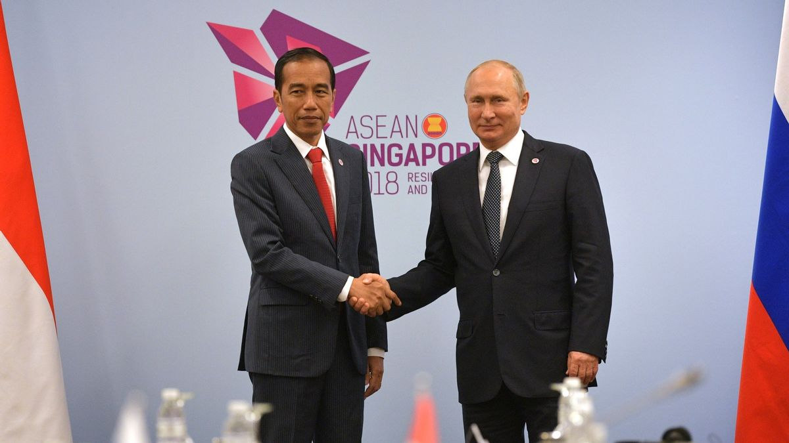
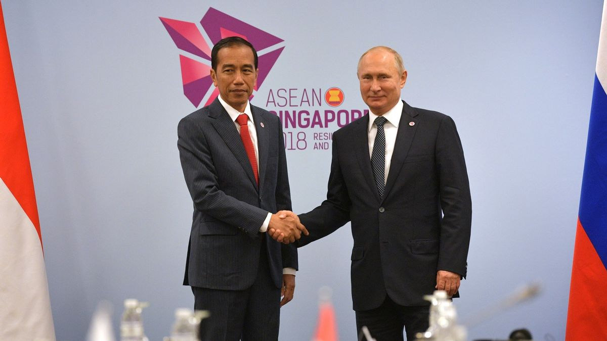
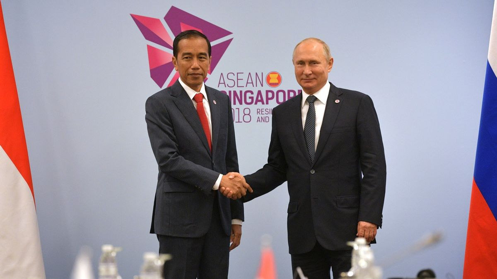

Kerja sama multilateral adalah bentuk kolaborasi yang melibatkan tiga atau lebih negara atau pihak yang bekerja sama untuk mencapai tujuan bersama. Kerja sama ini biasanya dilakukan dalam lingkup global atau regional melalui organisasi internasional atau forum multilateral, seperti Perserikatan Bangsa-Bangsa (PBB), World Trade Organization (WTO), atau ASEAN.

Ciri-Ciri Kerja Sama Regional
Melibatkan Banyak Pihak
Kerja sama multilateral melibatkan tiga negara atau lebih, atau organisasi internasional sebagai bagian dari kolaborasi.
Contoh: Perjanjian Paris (melibatkan lebih dari 190 negara).
Berbasis pada Kepentingan Bersama
Semua pihak yang terlibat memiliki kepentingan atau tujuan yang sama, seperti menjaga perdamaian dunia, mengatasi perubahan iklim, atau meningkatkan perdagangan global.
Dilakukan Melalui Organisasi atau Forum Internasional
Kerja sama biasanya terfasilitasi oleh organisasi atau forum internasional yang menjadi wadah diskusi dan pengambilan keputusan.
Contoh: Perserikatan Bangsa-Bangsa (PBB), World Trade Organization (WTO), atau ASEAN.
Bersifat Global atau Internasional
Fokus kerja sama multilateral umumnya mencakup isu-isu global yang berdampak luas, seperti kesehatan, ekonomi, keamanan, dan lingkungan.
Melibatkan Kesepakatan dan Perjanjian Bersama
Setiap pihak yang bekerja sama harus menyepakati aturan, kebijakan, atau perjanjian tertentu untuk mencapai tujuan bersama.
Contoh: Kesepakatan pada Konvensi Jenewa tentang hukum perang.
Contoh Kerja Sama Regional
Perserikatan Bangsa-Bangsa (PBB)
Organisasi global yang memfasilitasi kerja sama dalam berbagai bidang, seperti perdamaian, keamanan, dan bantuan kemanusiaan.
World Trade Organization (WTO)
Forum untuk mengatur dan memfasilitasi perdagangan internasional antara anggotanya.
Kelompok G20
Forum negara-negara maju dan berkembang yang membahas isu-isu ekonomi global.
Paris Agreement
Perjanjian internasional yang bertujuan untuk menangani perubahan iklim melalui pengurangan emisi karbon.
ASEAN Regional Forum (ARF)
Forum kawasan Asia Tenggara untuk membahas isu-isu politik dan keamanan yang melibatkan negara-negara anggota ASEAN dan mitra dialog.
Manfaat Kerja Sama Regional
Efisiensi dalam Menangani Masalah Global
Dengan banyak negara bekerja sama, solusi yang dihasilkan biasanya lebih efektif.
Penguatan Hubungan Diplomatik
Memperkuat hubungan antarnegara melalui dialog yang terorganisasi.
Berbagi Sumber Daya
Negara-negara dapat saling berbagi teknologi, pengetahuan, dan dana untuk mengatasi tantangan bersama.
Peningkatan Stabilitas dan Keamanan Global
Melalui diskusi dan pengambilan keputusan kolektif untuk mencegah konflik.
 
